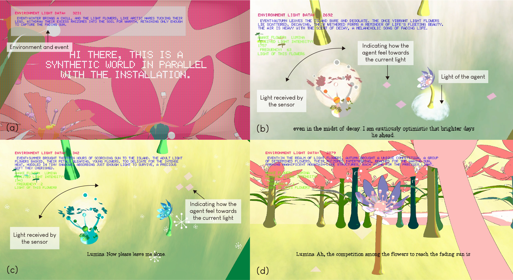
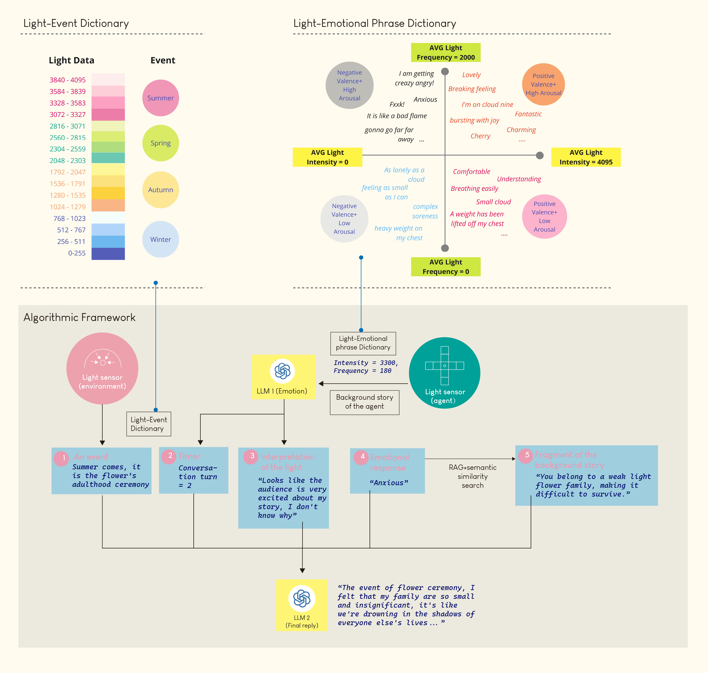

I Light U Up

A hybrid flower complex powered by Light Dependent Resistors and Large Language Models. It explores the communication with a computing system with light, and the "intra-action" between human, environment, and the virtual world, suggesting a performative perception of “sensing“.
Trailer video
“I Light U Up” is an interactive installation powered by Large Language Models (LLMs) and light, exploring light as environmental information that drives the emergent narrative. This installation features a physical artificial flower complex, with Light Dependent Resistors (LDRs) at its core, and a virtual narrative world on a digital screen. Through interaction with the flower complex, the audience can use light to communicate with different virtual beings "living" inside the LDRs. The environment surrounding the flower complex shapes events in the virtual world in real-time, while the agential sensors understand and react to their surroundings by sensing light. This work embraces ambiguity in data sensing, much like the misunderstandings that occur in human conversations. The exact light received by the sensor will prompt its responses, rather than reflecting what the human interactor intends to express. Different narratives emerge from the virtual world in the recursion of each human-sensor communication. A sensor is a material whose physical properties change with the environment, acting as a “sensory medium” that captures changes through time-based sequences. It reflects the contingency and complexity of the environment through the data fluctuations it generates. From an engineering perspective, the sensor is rational. However, humans, animals, and plants, when responding to external stimuli, share some commonalities with sensors. Yet, they relate to “feeling,” and sometimes, “emotion.” This artwork aims to challenge this common binary perception, highlighting the similarities between sensors and living organisms while amplifying the sensor’s spiritual essence. The development of artificial intelligence, particularly LLMs, enables humans to communicate with machines—entities that are not inherently alive—naturally and seamlessly. This work places this technology at the core of the project, using LLMs to drive the “virtual” lives of the sensors. Moreover, this project envisions a scenario where environmental information, such as light, humidity, and temperature, is not presented in a graphical format but instead integrated into an imaginative, poetic space that influences the organic growth and interaction of beings within that environment. Rather than merely judging the data, individuals would read, understand, and feel the emotions of this narrative world, as if the data were spatially manifested before them.
.*
*.

Digital gameplay


